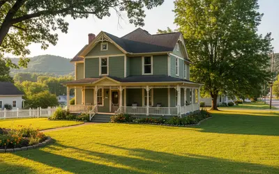

We're about 50 people living in 1880s Victorian cottages scattered across three river towns in West Virginia and Ohio. We're not a commune. We're not a movement. We're nurses and teachers, writers and carpenters, gardeners and tech workers who happened to find each other while trying to figure out how to live with a little more intention.
YACHT represents the five pillars of intentional living that guide our community. Each letter stands for a practice area where we invest our time and energy: Yoga, Arts, Cafe, Homes, and Tech. Together, they form a framework for building a life that reflects what actually matters.
Personal wellness practices that meet you where you are
Yoga here doesn't mean studios or workshops or certified anything. It means Evie Stone doing sun salutations on her porch at 6:15 AM because that's when the light hits just right. It means Iris Yamamoto hosting Wednesday evening meditation in her Market Street parlor, where the radiator clanks and nobody minds. It means Miguel Santos learning from YouTube videos in his kitchen before his 5 AM shift at the diner. We practice yoga the way we practice everything—imperfectly, at home, because it helps us show up for the rest of our lives.
Explore Yoga StoriesCreative expression in basement studios and sun porch offices
Elena Martinez throws pottery in the studio she built onto her 1891 Italianate cottage, between night shifts at the ER. Rachel Kim takes Polaroids of the ordinary moments—Bill's tomatoes, the morning light through wavy glass windows, Emma's SCOBY collection. Ben Okafor documents our lives with his camera. Nathan Cross makes custom furniture in his Marietta workshop, restoring our sagging porches one board at a time. Art here isn't something you visit in galleries. It's what happens when your hands need to be making something while your mind works through everything else.
Discover Arts StoriesGarden-to-table meals and coffee rituals that build community
Every Saturday morning, people drift into Maya Chen's kitchen on Front Street for coffee. There's no invitation. No RSVP. Just the understanding that the door's open and the French press is on. Bill Henderson grows Cherokee Purple tomatoes on his wraparound porch and gives away more than he keeps. Jesse Martinez learned to garden after losing his warehouse job—grew 47 pounds of tomatoes his first season. Deb Morrison's organic farm supplies half the community with produce. We eat together because that's when the best conversations happen.
Read Cafe StoriesIntentional living in 1880s cottages with all their quirks
These houses were built between 1886 and 1895. They have 9-foot ceilings and wavy glass windows and radiators that clank all night. The floors slope. The parlors are too small for modern sectionals. The porches sag. We live in them anyway. Sarah Mitchell manages the SILK Homes property in Marietta, welcoming new arrivals and her three chickens. Sam Rivera learned to heat his Italianate cottage for $165 instead of $340 after his first brutal winter. Tom Richardson fixes things without being asked. It's not always comfortable. But it's real.
Visit Homes StoriesDigital wellness and thoughtful technology in a connected world
Omar Hassan runs an informal repair cafe from his Marietta cottage, helping anyone who shows up with a broken phone or confused laptop. Jordan Hayes created a shared community calendar because we kept missing each other. Jacob Torres works remotely half the time, running code from a Victorian cottage with century-old radiators and spotty rural internet. We use technology when it helps us connect, create, or solve real problems. We put it down when it doesn't. Technology serves our lives here. It doesn't run them.
Explore Tech StoriesFour principles that guide how we live, work, and show up for each other
The courage to show up imperfectly and try again
Strength isn't about perfection. It's Jesse Martinez accepting groceries from neighbors after losing his job. It's Rachel Kim's 17 failed sourdough loaves before the 18th one finally rose. It's Elena Martinez working ER night shifts and still showing up to teach pottery on weekends. It's the quiet strength of Tom Richardson fixing everyone's problems without being asked, and the harder strength of learning to accept help when it's offered.
Living aligned with your actual values, not your aspirational ones
Integrity is Bill Henderson spending 30 years on the Ohio River and another decade learning to grow tomatoes because there's always something new worth learning. It's Sarah Mitchell driving her 1998 CR-V and managing the Marietta property with the same care she gave to her library patrons. It's Tom salting everyone's sidewalks before dawn without taking credit. Integrity is the difference between the life you perform and the life you actually live.
Showing up for each other in the small, consistent ways that matter
Love is Emma Clarke knowing everyone's story and introducing the right people at the right time. It's Terri Washington driving Elena to night shifts so neither of them has to be alone at 10 PM. It's the Saturday coffee at Maya's that nobody has to host alone because someone always shows up to help. It's Rosa Delgado bringing soup when anyone's sick, and Charlie Brooks fixing Maya's porch light even though he pretends to be gruff.
Learning that comes from doing, failing, and trying again
Knowledge isn't something you acquire once. It's Sam Rivera's entire first winter learning about radiators. It's Rachel's 17 failed sourdough attempts. It's Kevin Lee documenting oral histories with Bill, preserving the river stories that would otherwise disappear. It's the knowledge that lives in Dot Brennan's 79 years, and Howard Goldstein's legal mind helping draft community agreements. We learn by doing. Knowledge grows when we share it.
You don't have to live in a Victorian cottage in the Ohio River Valley to practice YACHT. You don't need a community of 50 people or a wraparound porch or a garden that produces too much zucchini. YACHT isn't a place or a program. It's a framework for building a life that reflects what actually matters to you.
Your yoga might be running or swimming or just breathing deeply three times before you start your day. Your arts might be cooking or woodworking or the way you arrange your space. Your cafe might be breakfast with your kids or coffee with one friend. Your homes might be a rental apartment you're making yours. Your tech might be the boundaries you set with your phone.
Start anywhere. Pick one practice. Build your YACHT one small choice at a time. You don't need to document it or optimize it or make it Instagram-worthy. You just need to do it. And then do it again tomorrow.
"I spent 30 years on the Ohio River learning one thing. Now I'm learning something new. There's always time to start." — Bill Henderson, 73, Ravenswood
Three river towns where the SILK community has taken root

A quiet river town where Victorian architecture survived because nobody had money to tear it down. About 25 of us live here, mostly on Front Street and River Road. The porches face each other. Bill's wraparound porch is where we gather on summer evenings. This is the heart of the community.
The bigger, more diverse, more working-class cousin to Ravenswood. About 15 of us scattered across Market Street and Avery Street. This is where Iris hosts Wednesday meditation, where Jesse learned to garden, where Miguel works 5 AM shifts at the diner and Tony runs the pizza shop his grandfather started.
A college town with an arts scene and a historic downtown. About 10 of us on Second and Third Streets. Sarah manages the SILK Homes property here with her three chickens. Omar runs the repair cafe. The academic and artistic energy is different—more book clubs, more music nights.
We're always looking for real stories from real people trying to live intentionally. Not success stories. Not how-to guides. Not perfectly curated moments. We want the Tuesday at 6:47 AM stories. The failed experiments. The awkward first attempts. The moments when your neighbor showed up and everything shifted slightly.
Personal yoga practices, creative projects, food stories, living in imperfect spaces, technology boundaries, community moments that happened accidentally—anything that reflects the YACHT pillars and the messy reality of trying to live with intention.
Have a story? Send it to stories@silklife.org. Include your name, location, and which YACHT pillar(s) your story touches. First-person narratives preferred. Imperfection required.
Get In Touch